What are these things called Bounded Contexts ? What’s the Ubiquitous Language ? In short, DDD is primarily about modeling a Ubiquitous Language in an explicitly Bounded Context. While true, that probably wasn’t the most helpful description that I could provide. Let me break this down for you.
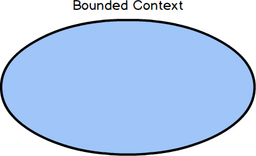
First, a Bounded Context is a semantic contextual boundary. This means that within the boundary each component of the software model has a specific meaning and does specific things. The components inside a Bounded Context are context specific and semantically motivated. That’s simple enough.
When you are just getting started in your software modeling efforts, your Bounded Context is somewhat conceptual. You could think of it as part of your problem space. However, as your model starts to take on deeper meaning and clarity, your Bounded Context will quickly transition to your solution space , with your software model being reflected as project source code. (The problem space and solution space are better explained in the box.) Remember that a Bounded Context is where a model is implemented, and you will have separate software artifacts for each Bounded Context.
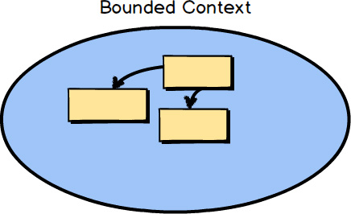
The software model inside the context boundary reflects a language that is developed by the team working in the Bounded Context and is spoken by every member of the team that creates the software model that functions within that Bounded Context. The language is called the Ubiquitous Language because it is both spoken among the team members and implemented in the software model. Thus, it is necessary that the Ubiquitous Language be rigorous—strict, exact, stringent, and tight. In the diagram, the boxes inside the Bounded Context represent the concepts of the model, which may be implemented as classes. When the Bounded Context is being developed as a key strategic initiative of your organization, it’s called the Core Domain.
When compared with all the software your organization uses, a Core Domain is a software model that ranks among the most important, because it is a means to achieve greatness. A Core Domain is developed to distinguish your organization competitively from all others. At the very least it addresses a major line of business. Your organization can’t excel at everything and shouldn’t even try. So you choose wisely what should be part of your Core Domain and what should not. This is the primary value proposition of DDD, and you want to invest appropriately by committing your best resources to a Core Domain.
When someone on the team uses expressions from the Ubiquitous Language , everyone on the team understands what is meant with precision and constraints. The expression is ubiquitous within the team, as is all language used by the team that defines the software model being developed.
When you consider language in a software model, think of the various nations that make up Europe. Within one of the countries across this space, the official language of each country is clear. Within the boundaries of those nations—for example, Germany, France, and Italy—the official languages are certain. As you cross a boundary, the official language changes. The same goes for Asia, where Japanese is spoken in Japan, and the languages spoken in China and Korea are clearly different across the national boundaries. You can think of Bounded Contexts in much the same way, as being language boundaries. In the case of DDD, the languages are those spoken by the team that owns the software model, and a notable written form of the language is the software model’s source code.
In human languages, terminology evolves over time, and across national boundaries the same or similar words take on nuances of meaning. Think of the differences between Spanish words used in Spain and those same words used in Colombia, where even the pronunciation changes. There is clearly Spain’s Spanish and Colombia’s Spanish. So too with software model languages. It’s possible that people from other teams would have a different meaning for the same terminology, because their business knowledge is within a different context; they are developing a different Bounded Context. Any components outside the context are not expected to adhere to the same definitions. In fact, they are probably different, either slightly or vastly, from the components that your team models. That’s fine.
To understand one big reason to use Bounded Contexts , let’s consider a common problem with software designs. Often teams don’t know when to stop piling more and more concepts into their domain models. The model may start out small and manageable . . .
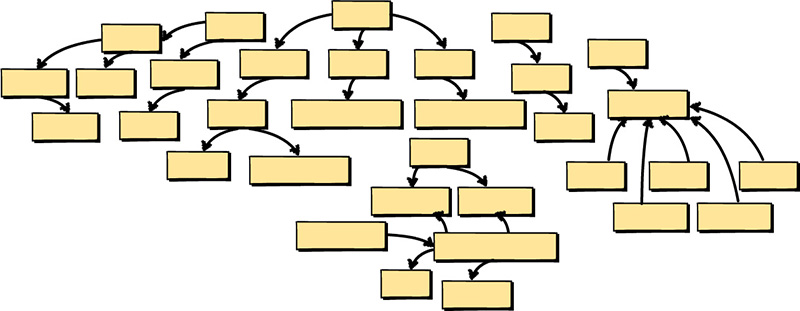
But then the team adds more concepts, and more, and still more. This soon results in a big problem. Not only are there too many concepts, but the language of the model becomes blurred, because when you think about it there are actually multiple languages in one large, confusing, unbounded model.
Due to this fault, teams will often turn a brand-new software product into what is called a Big Ball of Mud. To be sure, a Big Ball of Mud is not something to be proud of. It’s a monolith, and worse. This is where a system has multiple tangled models without explicit boundaries. It probably also requires multiple teams to work on it, which is very problematic. Furthermore, various unrelated concepts are blown out over many modules and interconnected with conflicting elements. If this project has tests, it probably takes a very long time to run them, and so the tests may be bypassed at especially important times.
It’s the product of trying to do too much, with too many people, in the wrong place. Any attempt to develop and speak a Ubiquitous Language will result in a fractured and ill-defined dialect that will soon be abandoned. The language wouldn’t even be as well conceived as Esperanto. It’s just a mess, like a Big Ball of Mud.
There may be strong, or at least subtle, hints communicated by business stakeholders that could have been used to help the technical team make better modeling choices. Thus, a Big Ball of Mud is often the result of unbridled effort made by a team of software developers who don’t listen to the business experts.
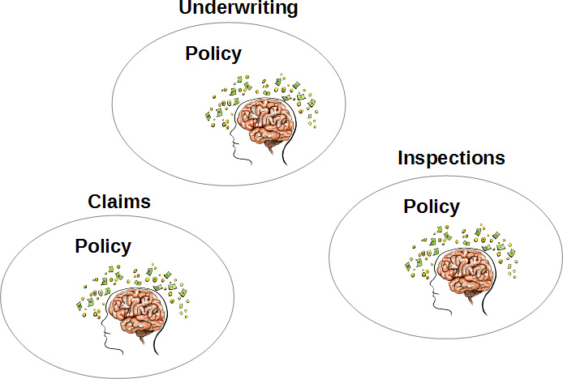
The business’s department or work group divisions can provide a good indication of where model boundaries should exist. You will tend to find at least one business expert per business function. Lately there is a trend toward grouping people by project, while business divisions or even functional groups under a management hierarchy seem to be less popular. Even in the face of newer business models you will still find that projects are organized according to business drivers and under an area of expertise. You may need to think of division or function in those terms.
You can determine that this kind of segregation is needed when you consider that each business function likely has different definitions for the same term. Consider the concept named “policy” and how the meaning differs across the various insurance business functions. You can easily imagine that a policy in underwriting is vastly different from a policy in claims and a policy in inspections. See the box for more details.
The policy in each of these business areas exists for different reasons. There is no escaping this fact, and no amount of mental gymnastics changes this.
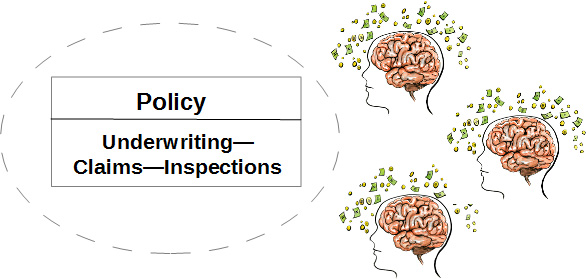
If you try to merge all three of these policy types into a single policy for all three business groups, you will certainly have problems. This would become even more problematic if the already-overloaded policy had to support a fourth and fifth business concept in the future. Nobody wins.
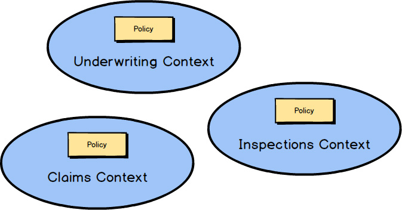
On the other hand, DDD emphasizes embracing such differences by segregating the differing types into different Bounded Contexts.
Admit that there are different languages, and function accordingly. Are there three meanings for policy? Then there are three Bounded Contexts
, each with its own policy, with each policy having its own unique qualities. There’s no need to name these UnderwritingPolicy
, ClaimsPolicy
, or InspectionsPolicy
. The name of the Bounded Context
takes care of that scoping. The name is simply Policy
in all three Bounded Contexts.
To make the reason to use Bounded Contexts more concrete, let me illustrate with a sample domain model. In this case we are working on a Scrum-based agile project management application. So, a central or core concept is Product, which represents the software that is to be built and that will be refined over perhaps years of development. The Product has Backlog Items, Releases, and Sprints. Each Backlog Item has a number of Tasks, and each Task can have a collection of Estimation Log Entries. Releases have Scheduled Backlog Items and Sprints have Committed Backlog Items. So far, so good. We have identified the core concepts of our domain model, and the language is focused and intact.
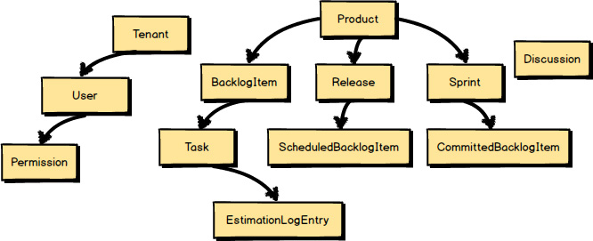
“Oh, yeah,” say the team members, “we also need our users. And we want to facilitate collaborative discussions within the product team. Let’s represent each subscribing organization as a Tenant. Within Tenants we will allow the registration of any number of Users, and Users will have Permissions. And let’s add a concept called Discussion to represent one of the collaborative tools that we will support.”
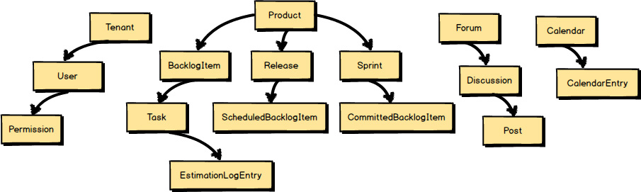
Then the team members add, “Well, there are also other collaboration tools. Discussions belong within Forums and Discussions have Posts. Also we want to support Shared Calendars.”
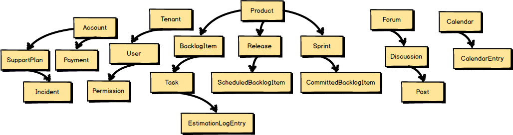
They continue: “And don’t forget that we need a way for Tenants to make Payments. We will also sell tiered support plans, so we need a way to track support incidences. Both Support and Payments should be managed under an Account.”
And still more concepts emerge: “Every Scrum-based Product has a specific Team that works on the product. Teams are composed of a single Product Owner and a number of Team Members. But how can we address Human Resource Utilization concerns? Hmmm, what if we modeled the Schedules of Team Members along with their utilization and availability?”
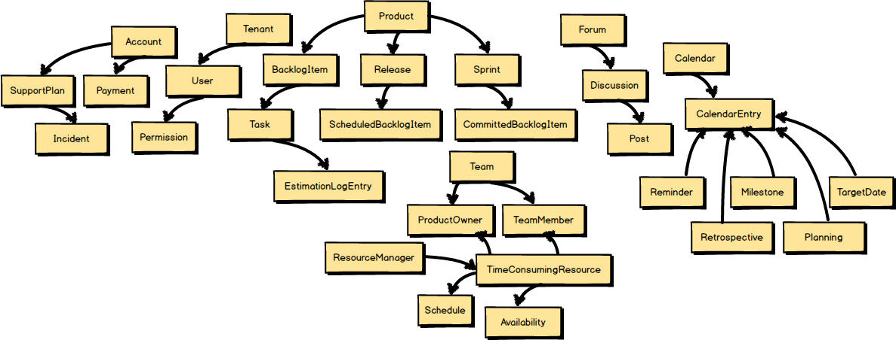
“You know what else?” they ask. “Shared Calendars should not be limited to bland Calendar Entries. We should be able to identify specific kinds of Calendar Entries, such as Reminders, Team Milestones, Planning and Retrospective Meetings, and Target Dates.”
Hang on a minute! Do you see the trap that the team is falling into? Look at how far they have strayed from the original core concepts of Product, Backlog Items, Releases, and Sprints. The language is no longer purely about Scrum; it has become fractured and confused.
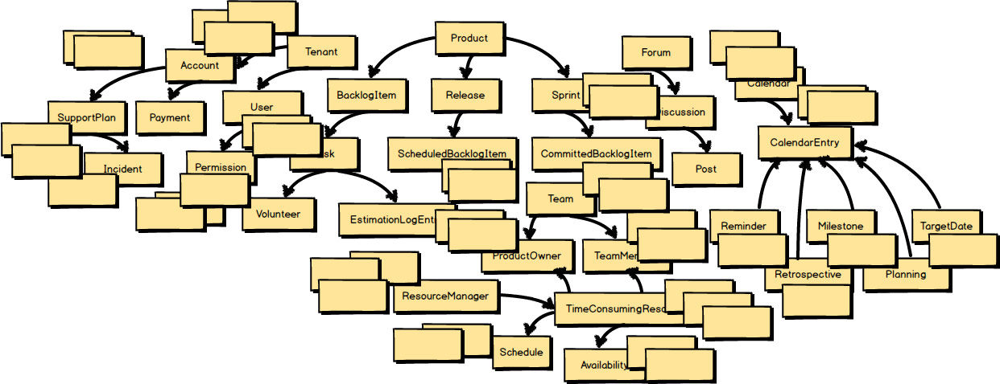
Don’t be fooled by the somewhat limited number of named concepts. For every named element, we might expect to have two or three more concepts to support those that quickly popped into mind. The team is already well on its way to delivering a Big Ball of Mud and the project has barely started.
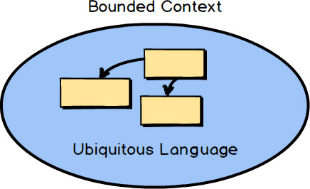
What tools are available with DDD to help us avoid such pitfalls? You need at least two fundamental strategic design tools. One is the Bounded Context and the other is the Ubiquitous Language. Employing a Bounded Context forces us to answer the question “What is core?” The Bounded Context should hold closely all concepts that are core to the strategic initiative and push out all others. The concepts that remain are part of the team’s Ubiquitous Language. You will see how DDD works to avoid the design of monolithic applications.
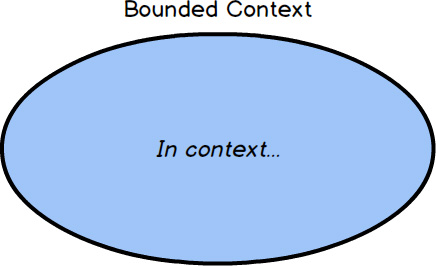
Literally, some concepts will be in context and be clearly included in the team’s language.
And other concepts will be out of context. The concepts that survive this stringent application of core-only filtering are part of the Ubiquitous Language of the team that owns the Bounded Context.
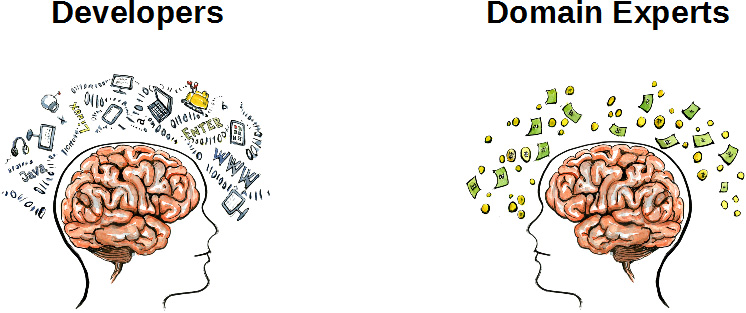
So, how do we know what is core? This is where we have to bring together two vital groups of individuals into one cohesive, collaborative team: Domain Experts and software developers.
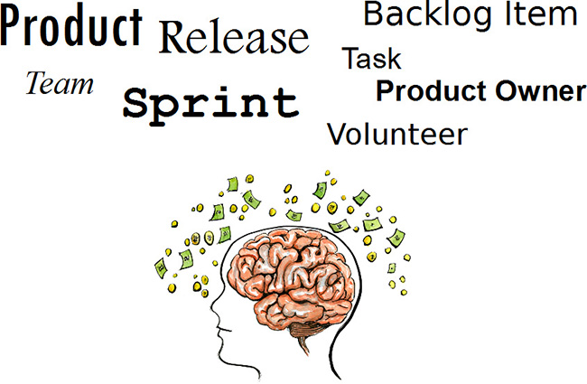
The Domain Experts will naturally be more focused on business concerns. Their thoughts will be centered on their vision of how the business works. In the domain of Scrum, count on the Domain Expert being a Scrum Master who thoroughly understands how Scrum is executed on a project.
In your particular business, you also have Domain Experts. It’s not a job title but rather describes those who are primarily focused on the business. It’s their mental model that we start with to form the foundation of the team’s Ubiquitous Language.
On the other hand, developers are focused on software development. As depicted here, developers can become consumed by programming languages and technologies. Yet developers working in a DDD project need to carefully resist the urge to be so technically centered that they cannot accept the business focus of the core strategic initiative. Rather, the developers should reject any uncalled-for terseness and be able to embrace the Ubiquitous Language that is gradually developed by the team inside their particular Bounded Context.
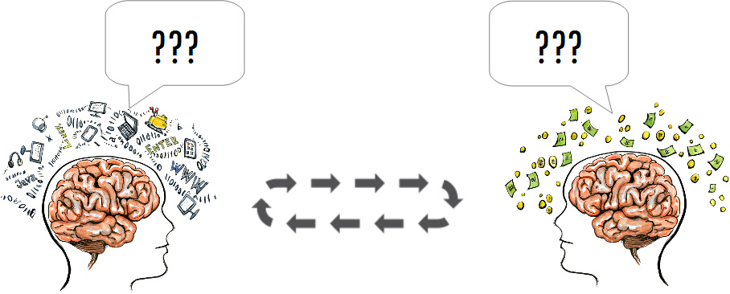
Both developers and Domain Experts should reject any tendency to allow documents to rule over conversation. The best Ubiquitous Language will be developed by a collaborative feedback loop that drives out the combined mental model of the team. Open conversation, exploration, and challenges to your current knowledge base result in deeper insights about the Core Domain.
Now back to the question “What is core?” Using the previously out-of-control and ever-expanding model, let’s challenge and unify!
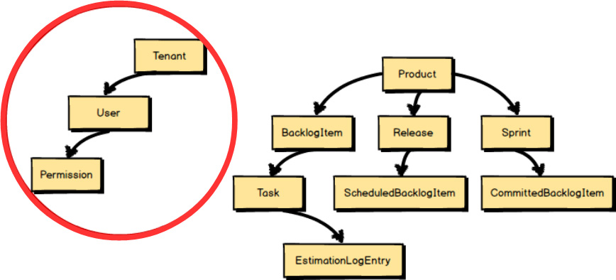
One very simple challenge is to ask whether each of the large-model concepts adheres to the Ubiquitous Language
of Scrum. Well, do they? For example, Tenant
, User
, and Permission
have nothing to do with Scrum. These concepts should be factored out of our Scrum software model.
Tenant
, User
, and Permission
should be replaced by Team
, ProductOwner
, and TeamMember
. A ProductOwner
and a TeamMember
are actually Users
in a Tenancy
, but with ProductOwner
and TeamMember
we adhere to the Ubiquitous Language
of Scrum. They are naturally the terms we use when we have conversations about Scrum products and the work a team does with them.
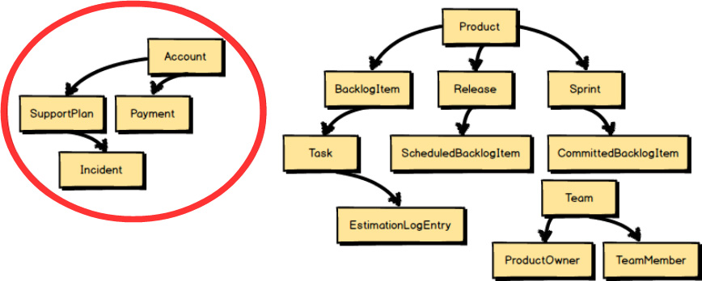
Are SupportPlans
and Payments
really part of Scrum project management? The answer here is clearly “no.” True, both SupportPlans
and Payments
will be managed under a Tenant
’s Account
, but these are not part of our core Scrum language. They are out of context and are removed from this model.
What about introducing Human Resource Utilization concerns? It’s probably useful to someone, but it’s not going to be directly used by TeamMember Volunteers
who will work on BacklogItemTasks
. It’s out of context.
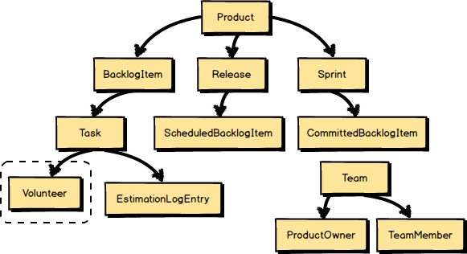
After the addition of the Team
, ProductOwner
, and TeamMember
, the modelers realized that they were missing a core concept to allow
TeamMembers
to work on Tasks
. In Scrum this is known as a Volunteer
. So, the Volunteer
concept is in context and was included in the language of the core model.
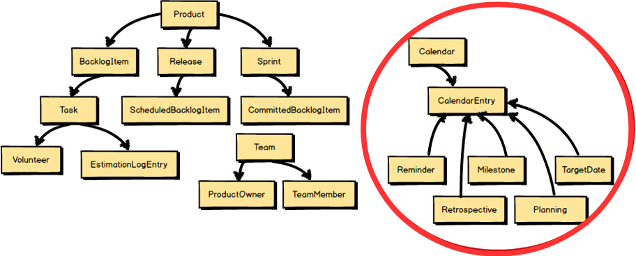
Even though calendar-based Milestones
, Retrospectives
, and the like are in context, the team would prefer to save those modeling efforts for a later sprint. They are in context, but for now they are out of scope.
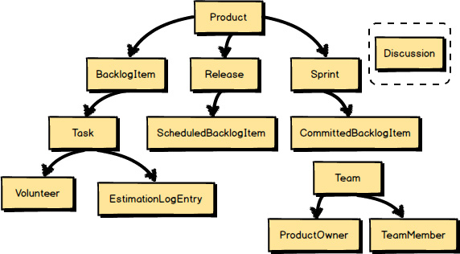
Finally, the modelers want to make sure that they account for the fact that threaded Discussions
will be part of the core model. So
they model a Discussion
. This means that Discussion
is part of the team’s Ubiquitous Language
, and thus inside the Bounded Context.
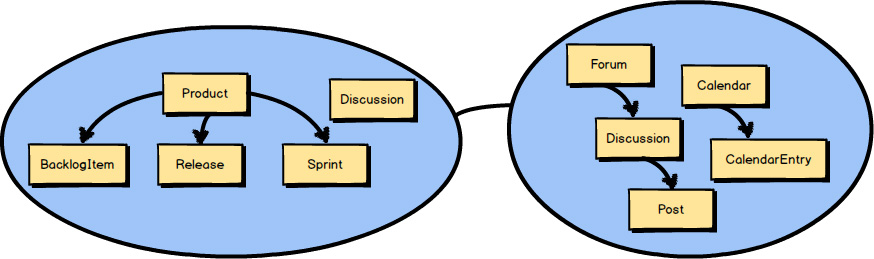
These linguistic challenges have resulted in a much cleaner and clearer model of the Ubiquitous Language. Yet how will the Scrum model fulfill needed Discussions ? It would certainly require a lot of ancillary software component support to make it work, so it seems inappropriate to model it inside our Scrum Bounded Context. In fact, the full Collaboration suite is out of context. The Discussion will be supported by integrating with another Bounded Context —the Collaboration Context.
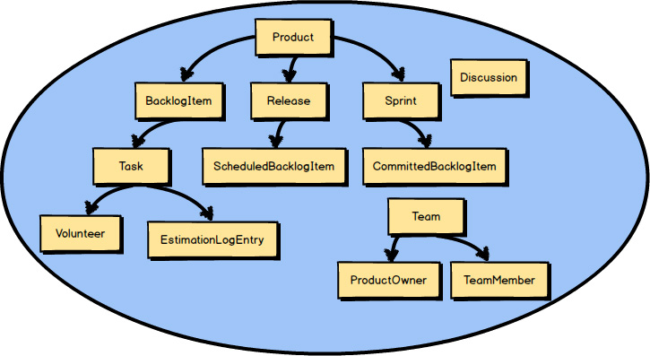
After that walk-through, we’re left with a much smaller actual Core Domain.
Of course the Core Domain
will grow. We already know that
Planning
, Retrospectives
, Milestones
, and related calendar-based models must be developed in time. Still, the model will grow only as new concepts adhere to the Ubiquitous Language
of Scrum.

And what about all the other modeling concepts that have been removed from the Core Domain ? It’s quite possible that several of the other concepts, if not all, will be composed into their own respective Bounded Contexts , each adhering to its own Ubiquitous Language. Later you will see how we integrate with them using Context Mapping.
So how do you actually go about developing a Ubiquitous Language within your team as you put into practice one of the chief tools provided by DDD? Is your Ubiquitous Language formed from a set of well-known nouns? Nouns are important, but often software developers put too much emphasis on the nouns within a domain model, forgetting that spoken language is composed of far more than nouns alone. True, we have mainly focused on nouns within our previous sample Bounded Contexts to this point, but that’s because we were interested in another aspect of DDD, that of constraining a Core Domain down to essential model elements.
Don’t limit your Core Domain to nouns alone. Rather, consider expressing your Core Domain as a set of concrete scenarios about what the domain model is supposed to do. When I say “scenarios” I don’t mean use cases or user stories, such as is common in software projects. I literally mean scenarios in terms of how the domain model should work—what the various components do. This can be accomplished in the most thorough way only by collaborating as a team of both Domain Experts and developers.
Here’s an example of a scenario that fits with the Ubiquitous Language of Scrum:
Allow each backlog item to be committed to a sprint. The backlog item may be committed only if it is already scheduled for release. If it is already committed to a different sprint, it must be uncommitted first. When the commit completes, notify interested parties.
Notice that this is not just a scenario about how humans use Scrum on a project. We are not talking about human procedures. Rather, this scenario is a description of how the very real software model components are used to support the management of a Scrum-based project.
The previous scenario is not a perfectly stated one, and a perk of using DDD is that we are constantly on the lookout for ways to improve the model. Yet this is a decent start. We hear nouns spoken, but our scenario doesn’t limit us to nouns. We also hear verbs and adverbs, and other kinds of grammar. You also hear that there are constraints—conditions that must be met before the scenario can be completed to its successful end. The most important benefit and empowering feature is that you can actually have conversations about how the domain model works—its design.
We can even draw simple pictures and diagrams. It’s all about doing whatever is needed to communicate well on the team. One word of warning is appropriate here. Be careful about the time spent in your domain-modeling efforts when it comes to keeping documents with written scenarios and drawings and diagrams up-to-date over the long haul. Those things are not the domain model. Rather, they are just tools to help you develop a domain model. In the end the code is the model and the model is the code. Ceremony is for distinguished observances, like weddings, not domain models. This doesn’t mean that you forgo any efforts to freshen scenarios, but only do so as long as it is helpful rather than burdensome.
What would you do to improve a part of the Ubiquitous Language in our previous example? Think about it for just a minute. What’s missing? Before too long you probably wish for an understanding of who does the committing of backlog items to a sprint. Let’s add the who and see what happens:
The product owner commits each backlog item to a sprint . . .
You will find in many cases that you should name each persona involved in the scenario and give some distinguishing attribute to other concepts such as to the backlog item and sprint. This will help to make your scenario more concrete and less like a set of statements about acceptance criteria. Still, in this particular case there isn’t a strong reason to name the product owner or further describe the backlog item and sprint involved. In this case all product owners, backlog items, and sprints will work the same way whether or not they have a concrete persona or identity. In cases where giving names or other distinguishing identities to concepts in the scenario helps, use them:
The product owner Isabel commits the View User Profile backlog item to the Deliver User Profiles sprint . . .
Now let’s pause for a moment. It’s not that the product owner is the sole individual responsible for deciding that a backlog item will be committed to a sprint. Scrum teams wouldn’t like that very much, because they would be committed to delivering software within some time frame that they had no say in determining. Still, for our software model it may be most practical for a single person to have the responsibility to carry out this particular action on the model. So in this case we have stated that it’s the product owner role that does this. Even so, the nature of Scrum teams forces the question “Is there anything that must be done by the remainder of the team to enable the product owner to perform the commitment?”
Do you see what has happened? By challenging the current model with the who question, we have been led to an opportunity for deeper insight into the model. Perhaps we should require at least some team consensus that a backlog item can be committed before actually allowing the product owner to carry out the commit operation. This could lead to the following refined scenario:
The product owner commits a backlog item to a sprint. The backlog item may be committed only if it is already scheduled for release, and if a quorum of team members have approved commitment . . .
OK, now we have a refined Ubiquitous Language , because we have identified a new model concept called a quorum. We decided that there must be a quorum of team members who agree that a backlog item should be committed, and there must be a way for them to approve commitment. This has now introduced a new modeling concept and some idea that the user interface will have to facilitate these team interactions. Do you see the innovation unfolding?
There is another who missing from the model. Which one? Our opening scenario concluded:
When the commit completes, notify interested parties.
Who or what are the interested parties? This question and challenge further lead to modeling insights. Who needs to know when a backlog item has been committed to a sprint? Actually one important model element is the sprint itself. The sprint needs to track total sprint commitment, and what effort is already required to deliver all the sprint’s tasks. However you decide to design the sprint to track that, the important point now is for the sprint to be notified when a backlog item is committed to it:
If it is already committed to a different sprint, it must be uncommitted first. When the commitment completes, notify the sprint from which it was uncommitted and the sprint to which it is now committed.
Now we have a fairly decent domain scenario. This concluding sentence has also led us to an understanding that the backlog item and the sprint may not necessarily be aware of commitment at the same time. We need to ask the business to be certain, but it sounds like a great place to introduce eventual consistency. You will see why that is important and how it is accomplished in Chapter 5 , “Tactical Design with Aggregates .”
The refined scenario in its entirety looks like this:
The product owner commits a backlog item to a sprint. The backlog item may be committed only if it is already scheduled for release, and if a quorum of team members have approved commitment. If it is already committed to a different sprint, it must be uncommitted first. When the commitment completes, notify the sprint from which it was uncommitted and the sprint to which it is now committed.
How would a software model actually work in practice? You can well imagine a very innovative user interface supporting this software model. As a Scrum team is participating in a sprint planning session, team members use their smartphones or other mobile devices to add their approval to each backlog item as it is discussed and agreed upon to work on during the next sprint. The consensus of the quorum of team members approving each of the backlog items gives the product owner the ability to commit all of the approved backlog items to the sprint.
You may be wondering how you can make the transition from a written scenario to some sort of artifact that can be used to validate your domain model against the team’s specifications. There is a technique named Specification by Example [Specification] that can be used; it’s also called Behavior-Driven Development [BDD] . What you are trying to achieve with this approach is to collaboratively develop and refine a Ubiquitous Language , model with a shared understanding, and determine whether your model adheres to your specifications. You will do this by creating acceptance tests. Here is how we might restate the preceding scenario as an executable specification:
Scenario:
The product owner commits a backlog item to a sprint
Given a backlog item that is scheduled for release
And the product owner of the backlog item
And a sprint for commitment
And a quorum of team approval for commitment
When the product owner commits the backlog item to the sprint
Then the backlog item is committed to the sprint
And the backlog item committed event is created
With a scenario written in this form, you can create some backing code and use a tool to execute this specification. Even without a tool, you may find that this form of scenario authoring with its given/when/then approach works better than the previous scenario authoring example. Yet executing your specifications as a means of validating the domain model may be hard to resist. I comment on this further in Chapter 7 , “Acceleration and Management Tools .”
You don’t have to use this form of executable specification in order to validate your domain model against your scenarios. You can use a unit testing framework to accomplish much the same thing, where you create acceptance tests (not unit tests) that validate your domain model:
/*
The product owner commits a backlog item to a sprint.
The backlog item may be committed only if it is already
scheduled for release, and if a quorum of team members
have approved commitment. When the commitment completes,
notify the sprint to which it is now committed.
*/
[Test]
public void ShouldCommitBacklogItemToSprint()
{
// Given
var backlogItem = BacklogItemScheduledForRelease();
var productOwner = ProductOwnerOf(backlogItem);
var sprint = SprintForCommitment();
var quorum = QuorumOfTeamApproval(backlogItem, sprint);
// When
backlogItem.CommitTo(sprint, productOwner, quorum);
// Then
Assert.IsTrue(backlogItem.IsCommitted());
var backlogItemCommitted =
backlogItem.Events.OfType<BacklogItemCommitted>().SingleOrDefault();
Assert.IsNotNull(backlogItemCommitted);
}
This unit-test-based approach to acceptance testing accomplishes the same goal as the executable specification. The advantage here may be the ability to write this kind of scenario validation more rapidly but at the cost of some readability. Still, most Domain Experts should be able to follow this code with some help from the developer. When using this approach it would probably work best to maintain the document form of the scenario associated with the validation code in comments, as seen in this example.
Whichever approach you decide on, both will generally be used in a red-green (fail-pass) fashion, where your specification will first fail when run, because there is no implementation of domain model concepts yet to be validated. You stepwise refine your domain model through a series of red results until you fully support your specification and the validations pass (you see all green). These acceptance tests will be directly associated with your Bounded Context and kept in its source code repository.
Now you may be wondering how we should support the Ubiquitous Language once the innovation has ceased and maintenance sets in. Actually, some of the best learning, or knowledge acquisition, takes place over a long period of time, even during what some might refer to as “maintenance.” It is a mistake for teams to take the view that innovation ends when maintenance begins.
Perhaps the worst thing that could happen is for the label “maintenance phase” to be attached to a Core Domain. A continuous learning process is not a phase at all. The Ubiquitous Language that was developed early on must continue to thrive as years pass. True, it may eventually be less significant, but probably not for quite a while. It is all part of your organization’s commitment to a core initiative. If this long-term commitment cannot be made, is this model that you are working on today truly a strategic differentiator, a Core Domain ?
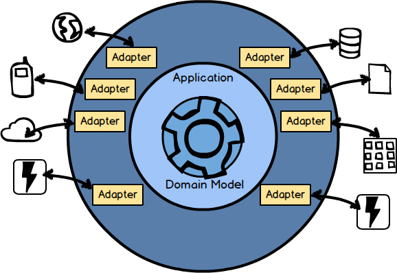
There is another question that you may have wondered about. What’s inside a Bounded Context ? Using this Ports and Adapters [IDDD] architecture diagram, you can see that a Bounded Context is composed of more than a domain model.
These layers are common in a Bounded Context: Input Adapters , such as user interface controllers, REST endpoints, and message listeners; Application Services that orchestrate use cases and manage transactions; the domain model that we’ve been focusing on; and Output Adapters such as persistence management and message senders. There is much to be said about the various layers in this architecture, and it is too elaborate to state in this distilled book. See Chapter 4 of Implementing Domain-Driven Design [IDDD] for an exhaustive discussion.
Ports and Adapters can be used as a foundational architecture, but it’s not the only one that can be used along with DDD. Along with Ports and Adapters, you can use DDD with any of these architectures or architecture patterns (and others), mixing and matching them as needed:
• Event-Driven Architecture; Event Sourcing [IDDD] . Note that Event Sourcing is discussed in this book in Chapter 6 , “Tactical Design with Domain Events .”
• Command Query Responsibility Segregation (CQRS) [IDDD] .
• Reactive and Actor Model; see Reactive Messaging Patterns with the Actor Model [Reactive] , which also elaborates on the use of the Actor model with DDD.
• Representational State Transfer (REST) [IDDD] .
• Service-Oriented Architecture (SOA) [IDDD] .
• Microservices are explained in Building Microservices [Microservices] as essentially equivalent to DDD Bounded Contexts , so both the book you are reading and Implementing Domain-Driven Design [IDDD] discuss the development of microservices from that perspective.
• Cloud computing is supported in much the same way as microservices, such that anything you read in this book, in Implementing Domain-Driven Design [IDDD] , and in Reactive Messaging Patterns with the Actor Model [Reactive] is applicable.
Another comment on microservices is in order. Some consider a microservice to be much smaller than a DDD Bounded Context.
Using that definition, a microservice models only one concept and manages one narrow type of data. An example of such a microservice is a Product
and another is a BacklogItem
. If this is the granularity that you consider a worthy microservice, understand that both the Product
microservice and the BacklogItem
microservice will still be in the same larger, logical Bounded Context.
The two small microservice components have only different deployment units, which may also have an impact on how they interact (see Context Mapping
). Linguistically they are still within the same Scrum-based contextual and semantic boundary.
• Some of the major pitfalls of putting too much into one model and creating a Big Ball of Mud
• The application of DDD strategic design
• The use of Bounded Context and Ubiquitous Language
• How to challenge your assumptions and unify mental models
• How to develop a Ubiquitous Language
• About the architectural components found inside a Bounded Context
• That DDD is not too difficult to put into practice yourself!
For a more in-depth treatment of Bounded Contexts , see Chapter 2 of Implementing Domain-Driven Design [IDDD] .